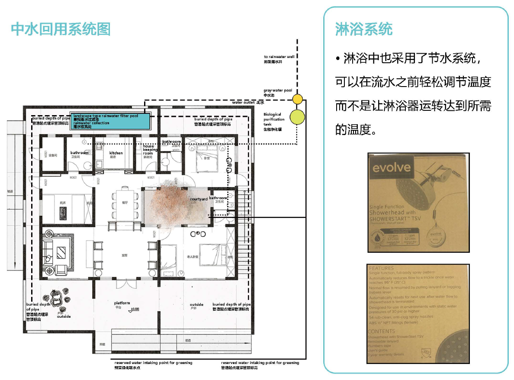
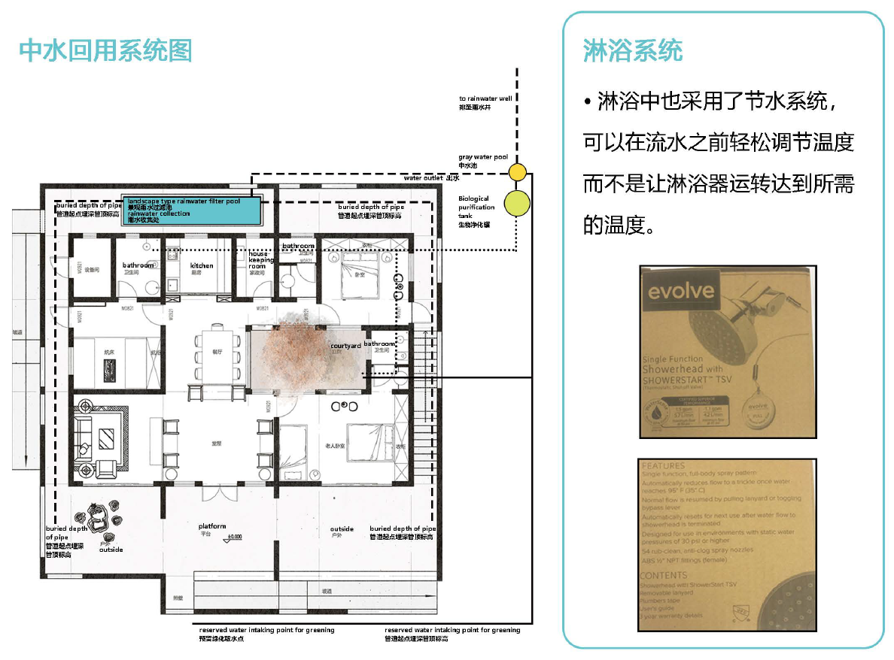

水资源再利用
策略与方法
·建筑中采用了雨水收集系统和中水回收系统。
·其中，雨水收集池设置于建筑内北侧的位置，雨水经过过滤被回收利用于建筑南侧的公园和 建筑中庭的植被灌溉。
·而中水回收池设置于建筑外部的东北角处，主要来自于盟洗t4~水、淋浴t4~水、厨余排水等， 这些杂用水经过过滤流至雨水收集池，与过滤后的雨水共同用于植被灌溉。
策略与方法
·建筑中采用了雨水收集系统和中水回收系统。
·其中，雨水收集池设置于建筑内北侧的位置，雨水经过过滤被回收利用于建筑南侧的公园和 建筑中庭的植被灌溉。
·而中水回收池设置于建筑外部的东北角处，主要来自于盟洗t4~水、淋浴t4~水、厨余排水等， 这些杂用水经过过滤流至雨水收集池，与过滤后的雨水共同用于植被灌溉。
意义
·随着时间的推移，这些功能将有助于节约和重新利用数干加仑的水，同时改善家庭内的生 活质量。
·这些有关水资源回收再利用的策略可能会影响未来的其他住宅设计，包括雨水回收系统和 中水回收系统以及淋浴系统，以便有效循环用水，提高多功能住宅的生活水平，最终吸引潜 在购买者。
·房屋内的雨水和中水系统可极大地提升市场潜力，因为它提升了了花园、植被以至于整个 家庭的美感。
中水回收利用系统优势
在住宅中设置中水回收利用系统，既可 以有效地利用和节约有限的、宝贵的淡 水资源，又可以减少污水、废水的排放 量，减少对水环境造成的污染，还可以 缓解城市下水道的超负荷现象。广泛推 广中水回用系统具有明显的社会效益、 环境效益和经济效益。
策略与方法
屋内有一个640W的静电除尘热交换器，可清除室内空气中的细小微粒，例如尘埃和烟雾。 屋内有一个500W中央空调系统，在整个设计过程中安装了六个输出量。智能家居功能连 接中央空气，并根据天气、湿度和其他情况对系统进行调整，以确保最佳的生活质量，而不 浪费任何额外的能源。
整个屋内的窗户都是开着或关着的，这也允许大量的空气循环变量，这些变量可以根据不同 的情况来调节空气流量和改善空气质量。-植物也是根据它们对空气质量影响最大的能力来适 应家庭的。
这种智能家居结合了室内照明、通风、遮阳、背景音乐等因素，在场景切换模式下为不同情况下 的室内人员创造了一个舒适的环境。同时，利用设备之间的连接来减少繁琐的操作。在提供舒适 环境的同时，为实现智能目标提供极大的便利服务。
中央空气系统一且发现空气质量对生活是完美的，就会立即关闭，从而节省资金和能源。如果 房间里没有人，它也会关闭。
室内植物是专门根据巴们对家庭内部空气质量的日常好处来选择的。
空调暖逼系统分析圄

空气净化系统
智能空调系统、有目的绿化、 空气净化系统和窗户通风，为 新鲜空气的流通提供了完美的 生活环境。
这个家的空气净化系统的成本 效益使市场潜力猛增，因为它 的技术和自然空气净化系统很 少或根本不需要维修，因为房 子用其多功能、对生态、友好的 灌溉系统给植物本身供水。。
中央空气系统在多功能热泵的 基础上运行，使家庭内部的净能 量为零。本家庭的热泵设计涵盖 所有的供暖，冷却和生活热水的 需要。
机械系统采用了可逆的水对水热泵，为空间空调的水热系统提供热水和冷水，并在没有备份的 情况下为家庭提供所有家用热水。在冷却方式下，该设备采用减温器将余热采集到生活热水中。 热泵还利用了一种创新的低成本地下热交换器， E花费了传统地源方法的一小部分，并从灰水 中回收热量。
来自家庭的中水在这些热交换器的外面流动，全年增加导热系数，并增加冬季的有效地温。
一台机器内的这种功能组合将节省资本成本，提高效率，并提供大量余热回收的机会。 这种换热器方式安装的成本约为传统地面相合系统的25% 。 这个家的空气净化系统的成本效益使市场潜力猛增，因为它的技术和自然空气净化系统很少 或根本不需要维修，因为房子用其多功能、对生态友好的灌溉系统给植物本身供水。
热泵热水器性能分析(制冷循环和水循环)

·所有具有创新性的方法虽然暂时不会被普及到普通家庭中，但它们提高了平均生活质量， 同时节约能源，并有助于环境保护。
·为了让房子具有独立的能源系统，建筑采用了四个1956x992x40mm的太阳能板来收集能 源。
·室内人员可以掌握足够的房屋信息，从而使用适当的电气设备进行调整，从而降低能源消 耗并降低高峰用电量。这使家庭成员能更好地了解自己的家。
·太阳能电池板不仅可以减少电费，而且还可以通过可再生的环境友好方式为独立住宅提供 电力。
·阁楼设有可视对i井系统，方便老年人照看小孩及与他们联系。这不仅满足了孩子们玩耍的 好奇心，也为老年人带来方便。
·智能家居有助于节能环保，并为人们提供舒适的生活环境。
·雨水和中水回用系统有利于房屋节约水资源的同时，通过灌溉房屋中的植被，也间接有利 于家庭空气质量的提升和美学价值。
·多功能热泵系统提供了一个节省成本的全年加热和冷却系统。
·中央空调系统也具有成本效益和电力友好性，因为当空气质量适合生活时，或者如果没有 人在房间内时，它可以通过关闭来节省金钱和能源。
·智能家居基于住宅建筑，它利用综合布线技术、网络通信技术、安全技术、自动控制技术 和青视频技术，并建立了一个高效的住宅设施和家庭日程事务管理系统。创造了一个安全、 方便、舒适、艺术、环保节能的居家生活环境。
·智能家居注重舒适性和便利性(减少人力和物力，创造智能环境)。
·在不同的场景模式下，该家庭结合了室内照明、通风、遮阳、背景音乐等因素，为不同场 合的室内人员营造舒适的环境。同时，设备之间的连接减少繁琐的操作。从而提供了舒适的 生活环境，同时提供出色的便捷服务，实现智能目标。
·智能家居有一个智能监控系统(显示电力流量使用和清楚的能源分自己)。
·家中的信息有些未显示，但反映在房间内部，以便使家庭各方面的数据价值最大化，并为 后续措施奠定器出。
·智能家居系统以电能为切入点，利用智能设备监测和统计平日无法看到的能源消耗。它也 以图像方式显示给室内人员，使电力透明化和能耗细节化。
·智能家居也适合老年人使用(它们关注老年人的生活并照顾老人)。这种智能家居系统在 针对特定人群时具有很大的灵活性和实用性，并且在服务于行动能力不便或身体不适的人群 时更加显示其智能t性。
·"祖父家的小阁楼"在设备布局上充分考虑、老年人的生活习惯，如安装自我感应小夜灯， 设置紧急报警装置等。
·为了减少不必要的风险，房子有一个阁楼，孩子们可以在此玩耍。
电话：029-8266-8477 邮箱：xjtusdc2018@126.com 地址：陕西省西安市咸宁西路28号 / 1215 Wilbraham Road Springfield 邮编：710049 / MA01119